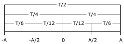

| Tiempos invertidos en recorridos parciales  Se tarda el mismo tiempo en hacer recorridos simétricos respecto al origen. Desde el origen hasta el extremo se tarda T/4 y por tanto de extremo a extremo se tarda T/2 Para un mismo recorrido se tarda lo mismo en la ida que en la vuelta |